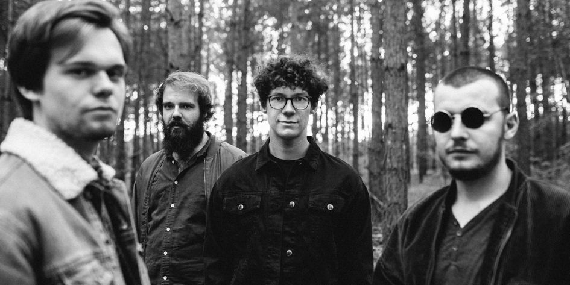

BIO
 Photo by Lea StädlerLiquid Silk transport you to a time when the streets were still dusty. Desert Groove! Peppered with Psychedelic and Heavy Blues Rock, spiked with a dash of Retro condiment. A sound that comes directly out of a time machine from the 70s. Surprising part changes and uneven beats aren't rare. Jam rock attitudes and power stoner riffs fuse together. To put it simply: Liquid Silk make Desert Groove.